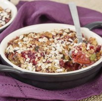
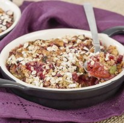

Local Food
 

Köttbullar is Sweden’s national dish. It is a meal made with minced pork or beef, onion, egg, milk, and breakcrumbs.
Smulpaj is a fruit crumble made from various fruits covered by a crumble composed of butter, sugar, wheat, flour, and oatmeal.
Tourist Destinations
Gamla Stan is Stockholm’s “old town”. It was initially built as early as the 13th century.
Drottningholm Palace is a UNESCO world heritage site, and previously home to Swedish noblity. It is now the official residence of the Swedish Royal Family.
Activities
Vasa Museum is a maritime museum in Stockholm. It contains one of the only fully recovered 17th century warships.
Liseberg is an amusement park in the West of Sweden. It is one of Sweden’s most popular amusement parks.
Fun Facts
Music is one of Sweden’s biggest exports.
Sweden has twice the population of Norway.
More than half of Sweden is covered in forests.
Demographics
Population: 10.4M
24.9% of residents have a foreign background
32.3% of residents have one parent born abroad
Map